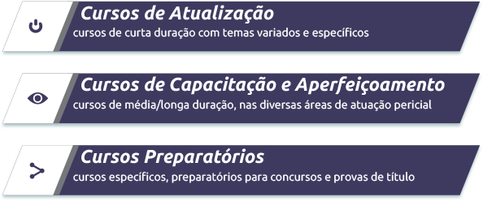

Nasci em Curitiba / PR em 01 de junho de 1950, onde vivo até hoje.
desde as primeiras letras até a faculdade de medicina em escolas públicas, atingindo a graduação em Medicina pela Universidade Federal do Paraná no ano de 1974.
Minha carreira profissional trilhou 2 caminhos paralelos: a medicina tradicional, na área de clínica médica e cardiologia, e a Perícia Médica (com algumas incursões na medicina do trabalho, como coordenador de PCMSO de empresas de construção civil, construção de estradas, indústria de tintas, entre outras).
A Perícia Médica passou a fazer parte de minha vida por absoluta obra do acaso, quando em encontro fortuito com um ex-colega da faculdade, este propôs indicar-me como substituto para vaga de médico perito que estava prestes a deixar, no então INPS, nos idos de 1975.
Durante mais de 30 anos (aposentei-me em 2007) trabalhei na instituição previdenciária, onde exerci desde atividades executivas, na linha de frente, até cargos de supervisão e chefia, tendo sido, por vários anos, responsável pelo serviço no âmbito estadual.
Meu encantamento e a paixão pela perícia médica logo motivaram a abertura de outras portas, em especial no município de Curitiba, onde respondi pela chefia da Divisão de Perícia Médica e pela direção do Departamento de Saúde Ocupacional, numa carreira que iniciou em 1977 e terminou em 2011, com a aposentadoria.
"
"
Artigos e trabalhos científicos pioneiros, participação em encontros e eventos onde se iniciaram os debates e estudos da matéria, proporcionaram conhecer outros médicos que, assim como eu, percebiam a perícia médica como algo maior que a mera atividade burocrática.
Ter sido um dos fundadores, e principalmente ter sido dirigente da Sociedade Brasileira de Perícias Médicas (2003 – 2010) muito me honra. E muito me orgulha ter participado e motivado a evolução associativa e científica da Perícia Médica até o reconhecimento da especialidade, em 2011, pela Associação Médica Brasileira.
A medida que cada vez mais me envolvia com a medicina pericial, minha atuação na medicina clássica foi ficando em segundo plano, sendo que, há 02 anos, não mais clinico, nem mesmo por diletantismo.
Como palestrante ou professor tenho participado de cursos e eventos nas 5 regiões do país, o que me rendeu um sem número de amigos e mentores, e me permite continuar visualizando a perícia médica como uma das áreas da medicina que mais irá proporcionar realização profissional aos médicos do século 21.
A CW3 Perícias, Cursos e Treinamentos surge com o propósito de oportunizar o acesso universalizado ao conhecimento teórico e prático na área da Perícia Médico-legal, aliando a solidez dos meus mais de 30 anos de experiência com as facilidades do mundo digital.
Dentro da CW3 Perícias coloco toda experiência positiva que obtive dos ensinamentos presenciais agora no âmbito online e disponível em um clique!
Além de contar com a minha coordenação e docência, iremos contar também com os melhores e mais renomados peritos do Brasil em aulas dinâmicas e em ambiente virtual de aprendizagem exclusivo, em cursos direcionados a médicos e também a advogados e operadores do direito.
